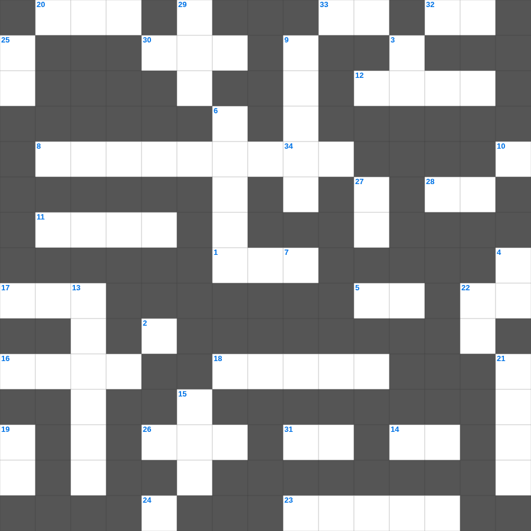

이사야: 거룩한 소명
📌 서비스 정의
십자가로세로는 교회 주보와 주일학교에서 사용할 수 있는 성경 기반 가로세로 퍼즐 서비스입니다. 성경 인물, 사건, 핵심 구절을 바탕으로 제작되었습니다. 온라인 풀이 및 인쇄 기능을 제공합니다.
📖 이사야란?
이사야는 유다 왕국의 멸망 위기 속에서 심판과 회복, 그리고 메시아의 오심을 예언한 책으로, 신약에서 가장 많이 인용되는 예언서 중 하나입니다.
📚 이사야의 주요 사건·주제
이사야의 소명(이사야 6장) · 임마누엘 예언 · 고난받는 종의 노래(이사야 53장) · 바벨론 멸망 예언 · 새 하늘과 새 땅 예언
이사야를 주제로 한 이사야 성경퀴즈입니다. 35개의 단어를 맞춰보세요! 가로세로 낱말 퍼즐 형식으로 이사야의 핵심 내용을 재미있게 복습할 수 있습니다.

📝 가로 힌트
1. 예수님이 세례받으신 강
2. 낮을 주관하게 하신 큰 광명체
5. 여호와 이것: 승리의 하나님
8. 불무불 속에 던져진 세 친구 이야기
11. 하나님이 만드신 최초의 낙원
12. 롯의 아내가 뒤를 돌아보다 변한 것
14. 베드로가 감옥에서 천사의 도움으로 나옴
16. 노동자 하루 품삯에 해당하는 은화
17. 매우 작은 씨앗의 대명사
18. 성경의 마지막 심판
20. 아론과 훌이 모세의 팔을 붙든 곳
22. 예수님이 태어나 뉘이셨던 곳
23. 산 위에서 예수님의 모습이 광채로 변함
24. 첫 번째 재앙: 강물이 이것이 됨
26. 예수님이 광야에서 시험받으신 기간
28. 기드온의 300 용사가 든 것: 항아리와 이것
30. 베드로가 고기를 잡던 호수
31. 성령의 열매: 오래 참음, 자비, 이것
32. 하나님은 영이시니 예배하는 자가 신령과 이것으로
33. 여호와는 나의 이것이시니 내게 부족함이 없으리로다
📝 세로 힌트
3. 동방 박사들이 드린 세 가지 예물 중 하나
4. 아기 예수님이 누우셨던 곳
6. 구하라 그리하면 너희에게 이것을 주실 것이요
7. 공의를 마르지 않는 이것 같이 흐르게 하라
9. 항상 이것하라
10. 번제단 네 모퉁이에 있는 것
13. 길가, 돌짝밭, 가시떨기, 좋은 땅 이야기
15. 이스라엘이 광야에서 보낸 시간(년)
19. 다윗이 사울을 위해 연주한 악기
21. 생명수 강가에 있는 이것
22. 어려운 이웃을 돕는 일
25. 너희가 서로 사랑하면 모든 사람이 너희가 내 이것인 줄 알리라
27. 슬플 때 찢으며 입었던 옷
29. 삼손의 힘의 비밀을 알아낸 여인
34. 여호와 이것: 치료하시는 하나님
🧑🏫 교회 교육 자료 활용
이 퍼즐은 주일학교 교재 추천 자료로 활용할 수 있고, 주일학교 주보에 넣기 좋은 분량으로 구성되어 있습니다. 수업용 주일학교 교안에 활동지로 붙이거나, 예배 후 복습용 주일학교 공과교재로 바로 사용할 수 있습니다.
🏷️ 키워드
이사야 성경퀴즈, 이사야, 십자가로세로, 성경퀴즈, 말씀퀴즈, 가로세로퍼즐, 주일학교 교재 추천, 주일학교 주보, 주일학교 교안, 주일학교 공과교재